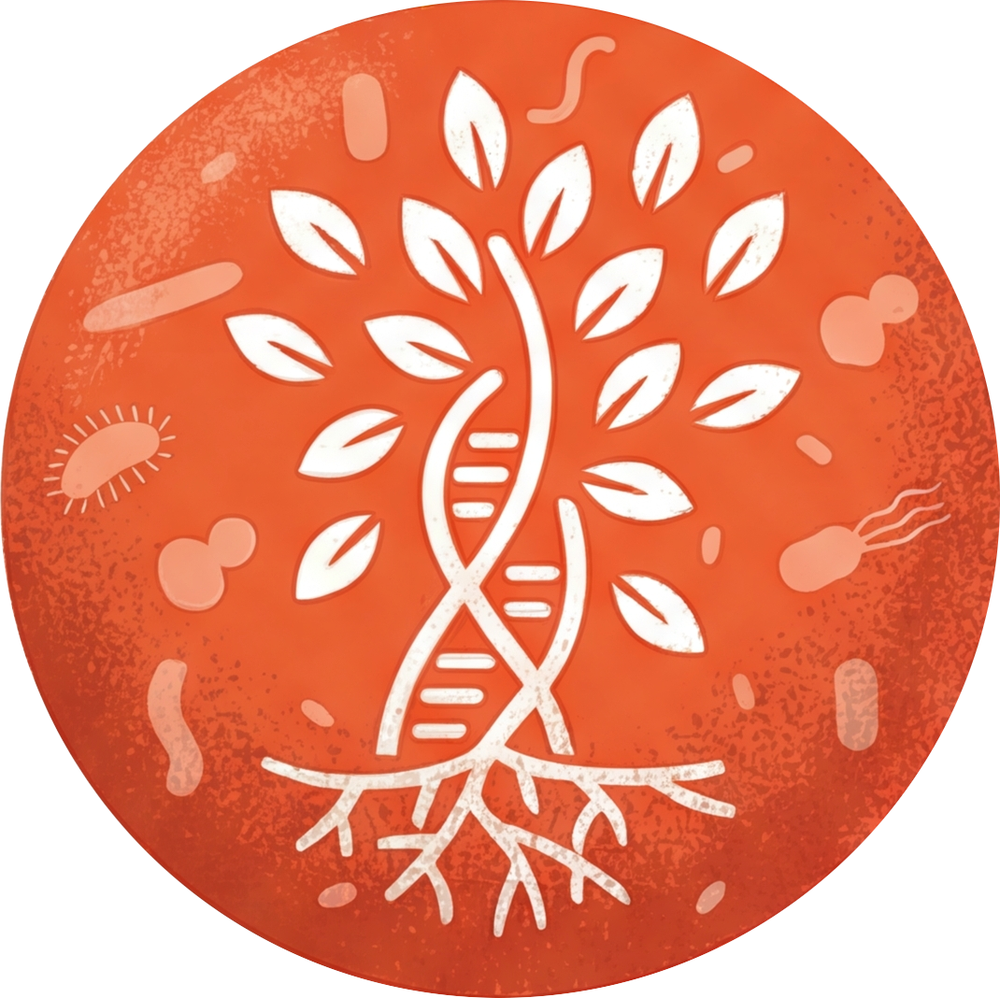

Listen to each version, follow the live captions, and pick your winners.
Answer aloud in 30s, reveal, then score yourself. Shaky & Missed come back sooner.
Record yourself. Track pace, pauses and energy — all local, nothing leaves this device.
WPM is auto-estimated from volume-gated speech bursts (rough). For an exact figure, type your real word count and recompute. The three non-negotiable silences — after “eyes before muscle”, after “we bend time”, before “Thank you” — should each show up as a pause.
Everything saved locally on this device.